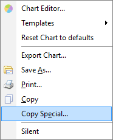
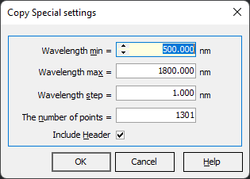
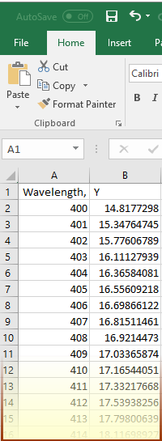

Copy Special
The conventional Copy command places information onto the Windows clipboard in various formats, including graphical and text, as appropriate. However, when numbers are represented as text, this can be inconvenient for several reasons:
Excessive or insufficient data points copied
The internally generated grid is not user-friendly
To achieve more precise control over the numerical information being copied, it is recommended to use the Copy Special… command available in the right-click menus found in most plots of OptiChar.

The Copy Special settings dialog provides options to customize the data being copied to the Windows clipboard. Users can specify wavelength or wavenumber limits, set a step size, or determine the number of points in the dataset. Additionally, the Include Header option allows for the inclusion or exclusion of header information in the copied data, giving you flexible control over the format of the information you retrieve.

After clicking the OK button, the data will be reevaluated in the specified grid, and the results will be available for pasting, for example, into MS Excel.
